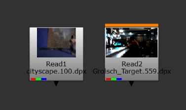
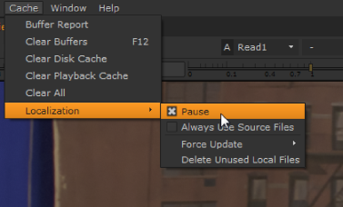
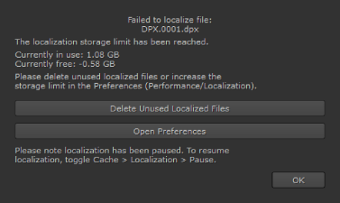
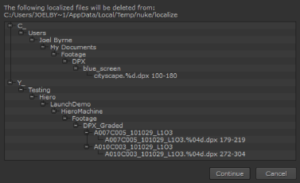

您可能会发现，有时从远程服务器加载文件会减慢处理速度。 Nuke 具有在本地缓存文件的功能，可以单独或通过设置自动本地化的文件夹 (默认情况下，NUKE_TEMP_DIR/localize)，以帮助保证播放稳定性。本地缓存最初在 偏好 对话框，然后在一个文件的基础上。
要设置初始缓存首选项:
| 1。 | 新闻 转变 + S 要打开 偏好 对话框。 |
| 2. | 导航到 性能 > 本地化 并输入文件路径 自动- 从本地化 ,如果需要。 |
读入时，此目录中的任何文件都会自动缓存 Nuke ,提供读取节点的 本地缓存 控件设置为 自动 .
注意: 在合成查看器播放期间暂停本地化，以便不影响性能。
| 3. | 输入的文件路径 本地化到 。将此字段保留为默认字段将在 临时目录 作为本地缓存。 |
注意:
在 Windows 上，文件保存到
本地化到
目录替换
\
(双反斜杠) 和
:
(冒号驱动器符号) 带下划线，以便文件路径在操作系统之间按预期工作。例如:
\ \ Windowspath \ to \ my \ network \ file.dpx
保存为
_ _ Windowspath \ to \ my \ network \ file.dpx
T: \ my \ network \ path \ file.dpx
保存为
T _ \ my \ network \ path \ file.dpx
| 4. | 输入的值 限制为 (GB) 控制缓存目录中有多少可用磁盘空间。 |
注意: 此字段中的负值始终保留指定的空间量。例如，-2 停止用于缓存的 2gb 内存。
| 5. | 设置默认设置 本地化政策 对于新的读取节点: |
• 上 -文件被缓存，无论位置如何，只要 限制为 (GB) 限制没有违反。
• 关闭 -无论位置如何，文件都不会被缓存。
• 从自动本地化路径 -文件缓存如果他们住在 从自动本地化 目录，只要 限制为 (GB) 限制没有违反。
| 6. | 您可以指定时间间隔 (分钟) 之前 从自动本地化 目录是检查更新的文件, 每 # # 分钟检查一次更新的文件 控制。 |
默认设置每 30 分钟检查一次文件的新版本，但您可以将此控件设置为任何值。
提示: 你可以暂时停止 Nuke 通过启用检查更新的文件 从不检查更新的文件 .
除了文件何时应本地化的一般规则之外，您还可以逐个文件地设置本地化。
| 1。 | 打开读取或 ReadGeo 节点 属性 面板。 |
| 2. | 设置 本地缓存 下拉到以下选项之一: |
• On - the files are cached, regardless of location, as long as the limit to (GB) limit is not breached.
• Off - the files are never cached, regardless of location.
• 从自动本地化路径 -文件缓存如果他们住在 从自动本地化 目录，只要 限制为 (GB) 限制没有违反。
当文件缓存时，节点上会显示一个进度条。完全缓存的节点在顶部用橙色条标记。

| 3. | 如果需要暂时暂停本地化，请导航到 缓存 > 本地化 并选择 暂停 . |

| 4. | 如果您发现缓存定期填满，您可以: |
• 提高本地化的可用空间量 限制为 (GB) 偏好,
• 导航到 缓存 > 本地化 > 删除未使用的本地文件 (见 删除本地化文件 )，或
• 默认情况下，手动清除 NUKE_TEMP_DIR/localize 中缓存目录中的文件。
| 5. | 启用 始终使用源文件 忽略所有本地化文件并始终从源读取。 |
| 6. | 你可以强迫 Nuke 检查更新的源文件，而不是等待 每次检查更新的文件 到期时间间隔，通过选择 强制更新 对于 所有 本地化文件或只是 选定 读取节点图中的节点。 |
注意: 每个文件都有自己的更新时间，每当检查源文件时都会重置。
定位的大量文件可以补国产化车很快，如果你离开了 限制为 (GB) 默认为 10 GB。当缓存空间耗尽时, 无法本地化文件 对话框显示和本地化暂停。

您可以通过单击删除本地化文件 删除未使用的本地文件 (或通过导航到 缓存 > 本地化 > 删除未使用的本地文件 )。 Nuke 显示一个对话框，其中包含所有标记为删除的文件。
提示: 您也可以打开 偏好 从该对话框中调整本地化行为，例如增加 限制为 (GB) 偏好。

单击 继续 删除本地化文件或 取消 保存缓存的文件。
|
|